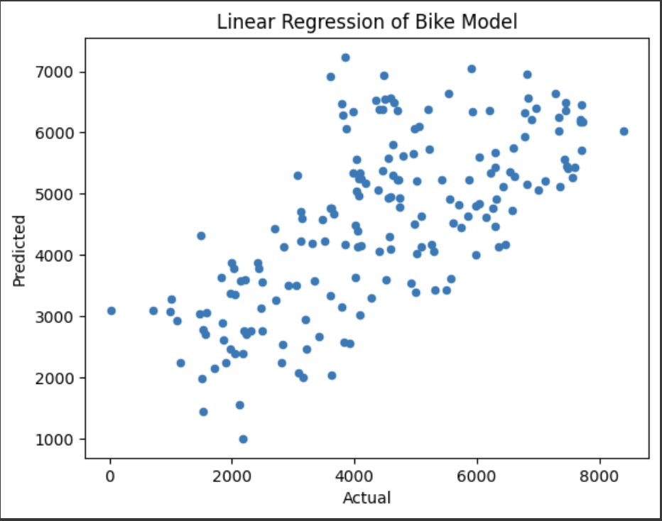

We knew that linear regression would be a good fit for this data because it is adept at predicting one simple target variable. Generally speaking, linear regression is best at providing clear insight into the impact that each feature has on one target variable, which offers easy interpretation of the relationship between the target and features. Additionally, it is a perfect choice of model when the goal is to predict a continuous target variable, which is exactly what we are trying to achieve with count, so linear regression was the best choice for our dataset. So, once we chose linear regression as our machine learning model, the first step to building it was to view the spread of the data and get acquainted with our dataset.
After looking at the spread of the data, we used Seaborn to view the spread of certain features against other features. Viewing these graphs allowed us to see which features have a linear relationship. Features that have a linear relationship should not both be kept because they're repetitive. So, from these graphs, we chose to keep season, month, holiday, weekday, weather, temperature, wind speed, and humidity as our x variables to predict the count of bikes on any given day.
Finally, we used PCA to do even more feature reduction before training our model. The graph below shows how many features are associated with the total explained variance. The goal of PCA is to reduce as many features as possible while still keeping at least 90% of the explained variance. As you can see from the graph, we needed to keep 5 PC's to have at least 90% explained variance. So, we reduced it to 5.
After training our model, we produced this scatterplot which shows the actual values of count, or how many bikes were used on a given day, verses what our model predicted. As you can see there is a strong linear correlation between the actual and predicted values of our model, meaning it's making good predictions.
Additionally, we ran tests to determine the metrics of our model and see how good it really performed. Although our model appeared to make good predictions from the linear correlation on the scatterplot, when viewing our metrics, it's clear that our model is incapable of accurately prediciting number of bikes.
So, to summarize, our model produced a scatterplot that looked linear. However, when taking a closer look at our metrics, it appears our model cannot accurately predict the count of bikes on any given day. While this is disappointing, it's an important lesson in checking metrics over assuming model performance from visuals.